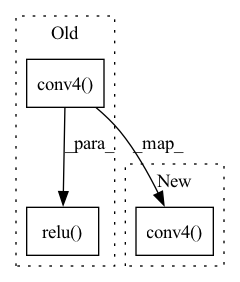

Pattern ID :13344
Before Change
if self.spatial == 0:
x = F.relu(self.batchnorm2(self.conv2(x)))
else:
x = F.relu( self.batchnorm2(self.conv4( x) ))
return x
def forward(self, x):
H = x.size()[2]After Change
x = F.relu(self.conv2(x))
else:
// x = F.relu(self.batchnorm2(self.conv4(x)))
x = F.relu(self.conv4( x) )
return x
def forward(self, x):In pattern: SUPERPATTERN
Frequency: 5
Non-data size: 3
Instances Fragment ID: 45114946
Project Name: wesleyhsieh0806/c3-sl
Commit Name: ba3914bc2d8b673377e33092c4dc9c44be40d610
Time: 2021-09-20
Author: b06901053@ntu.edu.tw
File Name: CIFAR10/split_compress_ECC_BottleNet_v2/model.py
M Class Name: compression_module
N Class Name: compression_module
M Method Name: decode(2)
N Method Name: decode(2)
M Parent Class: nn.Module
N Parent Class: nn.Module
M File Name: CIFAR10/split_compress_ECC_BottleNet_v2/model.py
N File Name: CIFAR10/split_compress_ECC_BottleNet_v2/model.py
M Start Line: 54
M End Line: 56
N Start Line: 55
N End Line: 58
Before Change
y = F.relu(self.conv1(x_syn + z))
y = F.relu(self.conv2(x_syn + y))
y = F.relu(self.conv3(x_syn + y))
residual = F.relu( self.conv4( x_syn + y))
out = x_syn + residual
// (B, 1, T, C) -> (B, T, C)After Change
y = F.relu(self.conv1(x_syn + z))
y = F.relu(self.conv2(x_syn + y))
y = F.relu(self.conv3(x_syn + y))
residual = self.conv4( x_syn + y)
out = x_syn + residual
// (B, 1, T, C) -> (B, T, C) Fragment ID: 45114947
Project Name: r9y9/nnsvs
Commit Name: 9ca75880ceb72cbd2a5f09ddad94ef1b38266fd4
Time: 2022-05-05
Author: zryuichi@gmail.com
File Name: nnsvs/postfilters.py
M Class Name: Conv2dPostFilter
N Class Name: Conv2dPostFilter
M Method Name: forward(3)
N Method Name: forward(3)
M Parent Class: BaseModel
N Parent Class: BaseModel
M File Name: nnsvs/postfilters.py
N File Name: nnsvs/postfilters.py
M Start Line: 28
M End Line: 28
N Start Line: 28
N End Line: 28
Before Change
x = F.relu(self.conv2(x))
else:
// x = F.relu(self.batchnorm2(self.conv4(x)))
x = F.relu( self.conv4( x))
return x
def forward(self, x):
H = x.size()[2]After Change
x = self.conv2(x)
else:
// x = F.relu(self.batchnorm2(self.conv4(x)))
x = self.conv4( x)
return x
def forward(self, x):
H = x.size()[2] Fragment ID: 45114937
Project Name: wesleyhsieh0806/c3-sl
Commit Name: dce51e84acf0f6655390b24e4cb96ebf70c2dba2
Time: 2021-09-21
Author: b06901053@ntu.edu.tw
File Name: CIFAR10/split_compress_ECC_BottleNet_v2/model.py
M Class Name: compression_module
N Class Name: compression_module
M Method Name: decode(2)
N Method Name: decode(2)
M Parent Class: nn.Module
N Parent Class: nn.Module
M File Name: CIFAR10/split_compress_ECC_BottleNet_v2/model.py
N File Name: CIFAR10/split_compress_ECC_BottleNet_v2/model.py
M Start Line: 55
M End Line: 58
N Start Line: 55
N End Line: 58
Before Change
y = F.relu(self.conv1(torch.cat([x_syn, z], dim=1)))
y = F.relu(self.conv2(torch.cat([x_syn, y], dim=1)))
y = F.relu(self.conv3(torch.cat([x_syn, y], dim=1)))
residual = F.relu( self.conv4( torch.cat([x_syn, y], dim=1)))
out = x_syn + residual
// (B, 1, T, C) -> (B, T, C)After Change
y = F.relu(self.conv1(torch.cat([x_syn, z], dim=1)))
y = F.relu(self.conv2(torch.cat([x_syn, y], dim=1)))
y = F.relu(self.conv3(torch.cat([x_syn, y], dim=1)))
residual = self.conv4( torch.cat([x_syn, y], dim=1))
out = x_syn + residual
// (B, 1, T, C) -> (B, T, C) Fragment ID: 45114938
Project Name: r9y9/nnsvs
Commit Name: 9ca75880ceb72cbd2a5f09ddad94ef1b38266fd4
Time: 2022-05-05
Author: zryuichi@gmail.com
File Name: nnsvs/postfilters.py
M Class Name: Conv2dPostFilter2
N Class Name: Conv2dPostFilter2
M Method Name: forward(3)
N Method Name: forward(3)
M Parent Class: BaseModel
N Parent Class: BaseModel
M File Name: nnsvs/postfilters.py
N File Name: nnsvs/postfilters.py
M Start Line: 57
M End Line: 57
N Start Line: 57
N End Line: 57
Before Change
x = F.relu(self.conv1(x))
x = F.max_pool2d(F.relu(self.conv2(x)), (2, 2))
x = F.relu(self.conv3(x))
x = F.max_pool2d(F.relu(self.conv4( x) ), 2)
x = x.view(-1, int(x.nelement() / x.shape[0]))
x = F.relu(self.fc1(x))
x = F.relu( self.fc2(x))
x = self.fc3(x)
return x
After Change
x = F.relu(self.bn1(self.conv1(x)))
x = F.max_pool2d(F.relu(self.bn2(self.conv2(x))), (2, 2))
x = F.relu(self.bn3(self.conv3(x)))
x = F.max_pool2d(F.relu(self.bn4(self.conv4( x) )), 2)
x = x.view(-1, int(x.nelement() / x.shape[0]))
x = self.fc1(x) Fragment ID: 45114940
Project Name: j-marple-dev/model_compression
Commit Name: 1d9fb24957cb8fb083f2c4c69c9f2b80b7f92b6e
Time: 2020-06-15
Author: hoonyyhoon@snu.ac.kr
File Name: src/models/simplenet.py
M Class Name: SimpleNet
N Class Name: SimpleNet
M Method Name: forward(2)
N Method Name: forward(2)
M Parent Class: nn.Module
N Parent Class: nn.Module
M File Name: src/models/simplenet.py
N File Name: src/models/simplenet.py
M Start Line: 29
M End Line: 37
N Start Line: 31
N End Line: 37